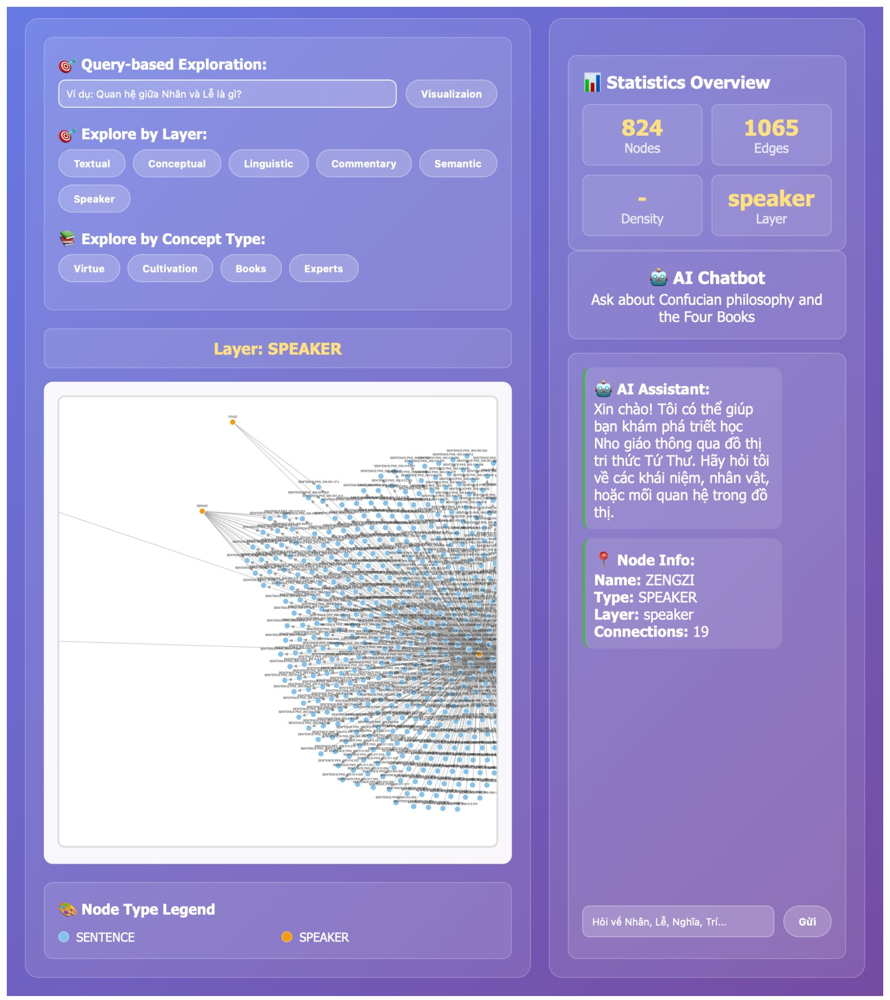
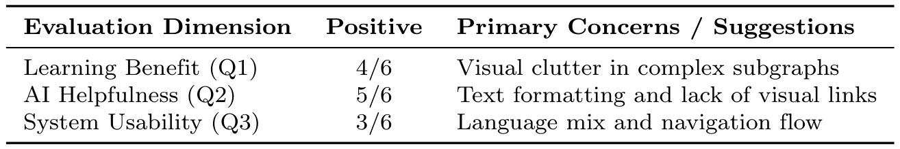
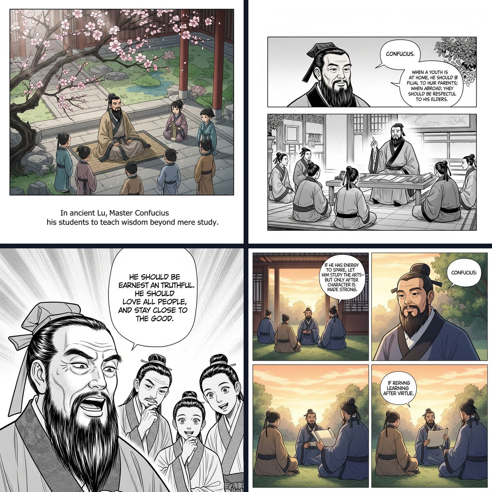
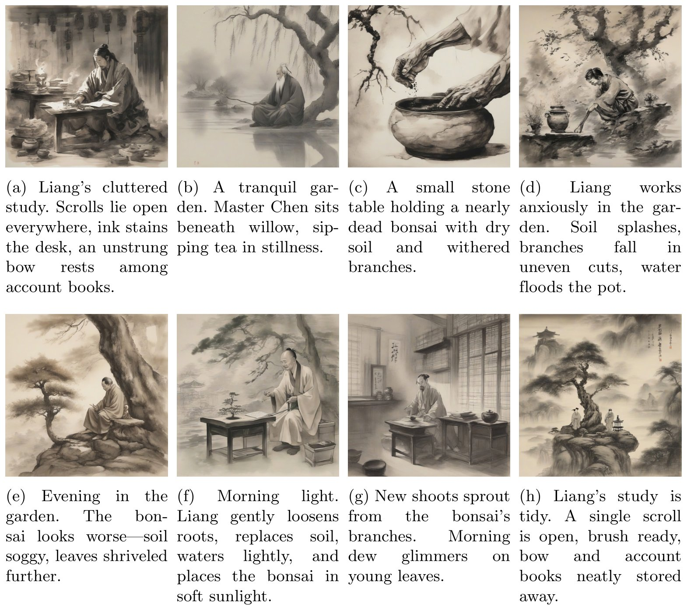

The Four Books have shaped East Asian intellectual traditions, yet their multi-layered interpretive complexity limits their accessibility in the digital age. While traditional bilingual commentaries provide a vital pedagogical bridge, computational frameworks are needed to preserve and explore this wisdom. This paper bridges AI and classical philosophy by introducing Graphilosophy, an ontology-guided, multi-layered knowledge graph framework for modeling and interpreting The Four Books. Integrating natural language processing, multilingual semantic embeddings, and humanistic analysis, the framework transforms a bilingual Chinese-Vietnamese corpus into an interpretively grounded resource.
Graphilosophy encodes linguistic, conceptual, and interpretive relationships across interconnected layers, enabling cross-lingual retrieval and AI-assisted reasoning while explicitly preserving scholarly nuance and interpretive plurality. The system also enables non-expert users to trace the evolution of ethical concepts across borders and languages, ensuring that ancient wisdom remains a living resource for modern moral discourse rather than a static relic of the past. Through an interactive interface, users can trace the evolution of ethical concepts across languages, ensuring ancient wisdom remains relevant for modern discourse. A preliminary user study suggests the system's capacity to enhance conceptual understanding and cross-cultural learning.
By linking algorithmic representation with ethical inquiry, this research exemplifies how AI can serve as a methodological bridge, accommodating the ambiguity of cultural heritage rather than reducing it to static data. The Source code and data are released at https://github.com/ThuDoMinh1102/confucian-texts-knowledge-graph.
Graphilosophy builds an ontology-guided knowledge graph for the bilingual Classical Chinese–Vietnamese Four Books corpus. Its six layers—Meta, Textual, Linguistic, Conceptual, Commentary and Speaker, and Semantic—separate distinct analytical roles while remaining linked for cross-layer queries. The schema defines 20 entity classes and 18 directed relation types; relations are generated through automatic rules, semi-automatic processing with human validation, or manual expert annotation.
The corpus combines 2,222 segmented sentences, 80 scholarly commentary annotations, and a lexical dictionary of 2,788 entries, including 2,562 unique Classical Chinese characters and 23 core Confucian concepts. The resulting graph contains 16,468 nodes and 71,249 edges. Tri-parallel text aligns Classical Chinese, Sino-Vietnamese readings, and modern Vietnamese translations; the lexical corpus connects dictionary entries to context, and the exegesis corpus links expert commentary to canonical passages. Contextual multilingual embeddings help resolve polysemy without forcing a single definitive meaning, while expert review checks alignment and preserves interpretive plurality.

Figure 2. User interface of the proposed system integrating layered KG visualization, semantic search, and commentary exploration. The interface enables cross-lingual retrieval and interpretive analysis of The Four Books through Gemini-powered natural language querying. Some instructions in the interface are displayed in Vietnamese to enhance usability for local users.
Table 3. Retrieval performance comparison between BM25, Semantic, and Hybrid approach. Best in bold, second best underlined.
| Metric | BM25 | Semantic (E5) | Hybrid | Best Performer |
|---|---|---|---|---|
| P@1 | 0.773 | 1.000 | 1.000 | Hybrid/Semantic |
| P@3 | 0.652 | 1.000 | 1.000 | Hybrid/Semantic |
| P@5 | 0.564 | 1.000 | 1.000 | Hybrid/Semantic |
| P@10 | 0.505 | 1.000 | 0.995 | Semantic |
| MRR | 0.773 | 1.000 | 1.000 | Hybrid/Semantic |
| NDCG@5 | 0.770 | 1.000 | 1.000 | Hybrid/Semantic |
| NDCG@10 | 0.766 | 1.000 | 1.000 | Semantic |
Semantic and Hybrid reach 1.000 on most reported metrics, while BM25 declines from 0.773 at P@1 to 0.505 at P@10. The evaluation uses a synthetic corpus of Confucian concepts and unrelated topics; the paper cautions that this controlled test does not establish performance for nuanced philosophical relevance judgments.
Table F2. Retrieval effectiveness between Adaptive Semantic and Fixed Chunking. Best in bold.
| Method | Recall@5 | NDCG@5 | Mean Similarity |
|---|---|---|---|
| Fixed Chunking (Baseline) | 0.315 | 0.281 | 0.861 |
| Adaptive Semantic Chunking (Ours) | 0.380 | 0.333 | 0.863 |
On a test corpus of 200 annotated queries, Adaptive Semantic Chunking reports higher Recall@5 (0.380 versus 0.315) and NDCG@5 (0.333 versus 0.281) than Fixed Chunking. Mean Similarity is 0.863 versus 0.861; the paper reports improvements of 20.6% in Recall@5 and 18.5% in NDCG@5.
A preliminary evaluation with six graduate students in Educational Science examined Graphilosophy’s pedagogical and scholarly use. Participants traced the concept 仁 across The Analects and The Works of Mencius, compared speakers’ uses of 禮, and used exact-text search to find commentary links. Interviews suggested the system helped learners explore conceptual structure and intertextual relationships, while identifying visual density, labeling, and chatbot presentation as areas to improve. The authors caution that this small exploratory study does not establish generalizability or long-term educational impact.
Table 2. Summary of participant response trends (n = 6).

Participants reported positive learning benefit (4/6), AI helpfulness (5/6), and system usability (3/6), alongside concerns about visual clutter, chatbot presentation, and navigation. The paper presents these as exploratory qualitative feedback from six participants.
The response summary shows positive feedback from 4 of 6 participants on learning benefit, 5 of 6 on AI helpfulness, and 3 of 6 on system usability. Reported concerns included visual clutter in complex subgraphs, chatbot text formatting and missing visual links, and mixed language and navigation flow. Each session lasted about 60 minutes, including task completion and a post-study interview. These response counts summarize a small exploratory sample rather than a generalizable effectiveness evaluation.
The paper extends the knowledge graph into generative storytelling, turning philosophical passages into sequential visual narratives. The prototype supports collaborative narrative composition, panel organization, and visual coherence, connecting classical commentary with AI-assisted cultural heritage storytelling.

Figure 9. AI-generated narrative visualization from The Analects.

Figure 10. Qualitative results of the Philosophy-Unfolded - The Great Learning (大学/ Đại Học) system. Eight visual narratives depict sequential moral progressions derived from the canonical text and commentary through multimodal generative interpretation.
@article{do2026graphilosophy,
author = {Do, Minh-Thu and Le-Tran, Quynh-Chau and Nguyen-Mai, Duc-Duy and Nguyen, Thien-Trang and Le, Khanh-Duy and Tran, Minh-Triet and Nguyen, Tam V. and Le, Trung-Nghia},
title = {Graphilosophy: Graph-Based Digital Humanities Computing with The Four Books},
journal = {AI & Society},
year = {2026},
}